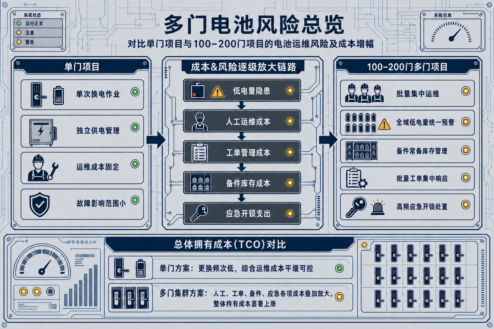
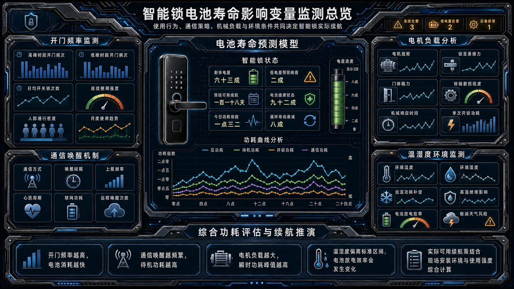
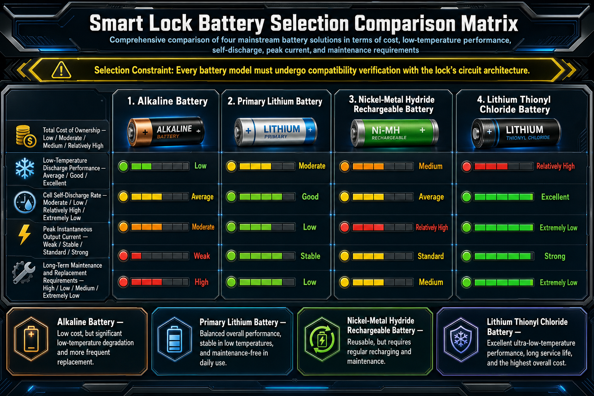
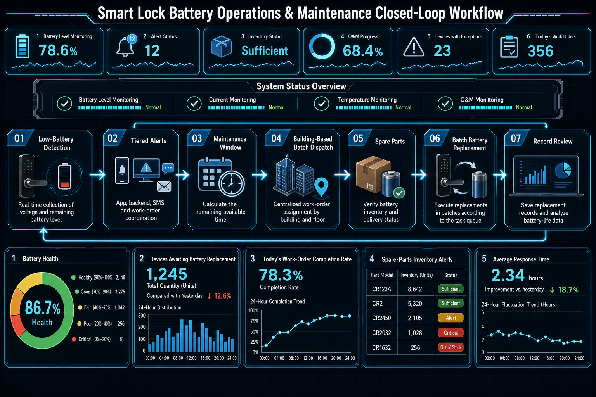
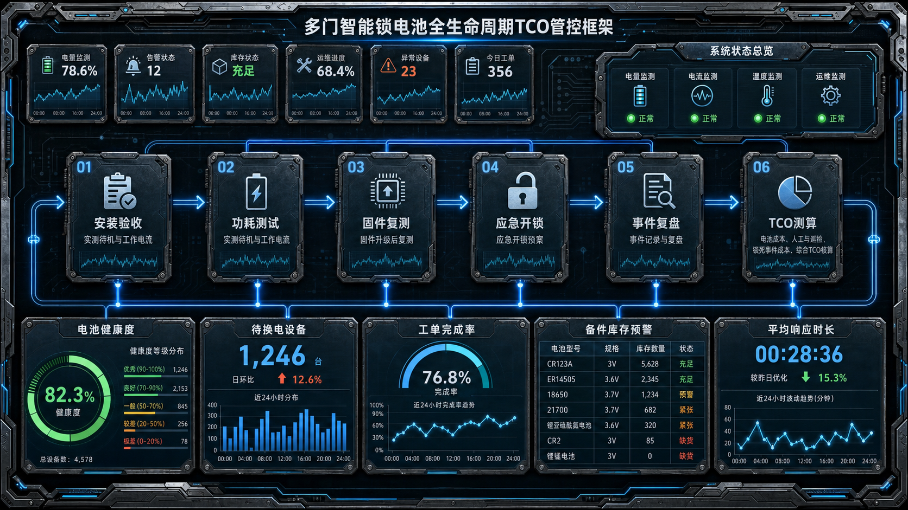

Uma fechadura que dura “um ano” numa porta individual representa um risco muito diferente num projeto com 100 ou 200 portas. Em muitos acessos, a mesma taxa de falha é multiplicada pelo número de portas e acrescenta visitas, espera, reclamações e custos de desbloqueio de emergência.
Este artigo aborda fechaduras alimentadas por bateria e não cobre sistemas com alimentação central, PoE ou AC. A sequência é prática: identificar variáveis, selecionar baterias, definir estratégia, criar alertas, validar consumo, preparar acesso de emergência e calcular o TCO.

FAQ: respostas rápidas
Quanto tempo duram normalmente as baterias?
A autonomia depende da frequência de abertura, comunicação, carga do motor, temperatura, humidade, bateria e configuração. Deve ser validada com condições de teste próximas do projeto.
Como evitar uma onda de baterias descarregadas num projeto multiporta?
Divida a manutenção por edifício, piso ou zona, use alertas antecipados e substitua por lotes escalonados em vez de esperar por falhas simultâneas.
Porque é que a autonomia pode cair no inverno?
Temperaturas baixas alteram o desempenho e a capacidade disponível de algumas químicas. Confirme a faixa de operação e teste a bateria no ambiente previsto.
Quando se deve substituir a bateria antecipadamente?
Depois de um alerta de bateria fraca, considere capacidade restante, frequência de uso e a próxima janela de manutenção. Não espere por um bloqueio.
Um projeto multiporta precisa de PMS ou plataforma de gestão?
Não necessariamente, mas à medida que cresce o número de portas, alertas, permissões, ordens de trabalho e registos dependem cada vez mais de uma gestão sistemática.
Parte 1: quatro variáveis que determinam a autonomia
A autonomia resulta do comportamento de acesso, da estratégia de comunicação, da carga mecânica e das condições ambientais.

Frequência de abertura e períodos de pico
Conte ciclos reais e picos de utilização. Hotéis e edifícios comerciais podem exigir uma estratégia diferente de apartamentos.
Comunicação e mecanismo de despertar
Despertares frequentes, sincronização e alcance afetam o consumo. Compare o modo normal e o comportamento offline.
Torque, resistência e multipontos
Portas desalinhadas, linguetas duras e multipontos aumentam o esforço do motor e reduzem a autonomia.
Temperatura, humidade e instalação
O ambiente altera a capacidade da bateria e a resistência mecânica. Meça no local quando possível.
Parte 2: adequar a bateria ao ambiente
Compare tensão, curva de descarga, desempenho a baixa temperatura, autodescarga e corrente de impulso. Antes de alterar a química, confirme tensão, compartimento, proteção e autorização do fabricante.

Parte 3: estratégia por perfil de projeto
Em apartamentos e arrendamentos, planeie alertas e janelas de manutenção. Em hotéis, coordene substituições com ocupação e PMS. Em escritórios, considere zonas e horários. Em projetos residenciais por lotes, organize inventário e equipas.
Parte 4: alertas e manutenção por lotes
O objetivo é transformar falhas reativas em manutenção preventiva. Limiares, canais de alerta, ordens de trabalho, inventário e responsáveis devem formar um ciclo fechado.

Substituição por edifício, piso e lote
Divida o projeto e escalone o trabalho para manter os recursos previsíveis.
Inventário e responsabilidades
Registe data, localização e lote da bateria. Defina quem inspeciona, substitui, atende emergências e suporta o custo das peças.
Parte 5: instalação, firmware e comunicação
Alinhamento, torque, intervalos de comunicação, OTA e configurações de segurança podem alterar o consumo. Depois de alterações, repita os testes de corrente e autonomia.
Parte 6: desbloqueio de emergência
Prepare alimentação de reserva, procedimento de acesso, ferramentas, contactos e registos. Uma bateria sobressalente não substitui um plano de emergência.
Parte 7: perguntas ao fornecedor
- Que frequência de abertura, temperatura e modelo de bateria foram usados no teste?
- Quais são os limiares de bateria fraca, canais de notificação e capacidades de API?
- Que alimentação de reserva, desbloqueio de emergência e peças estão disponíveis?
- Uma atualização OTA pode afetar o consumo e como são acordados suporte e SLA?
Parte 8: TCO em projetos multiporta

Calcule produto, baterias, mão de obra, deslocações, indisponibilidade, peças, alertas, suporte, emergência e substituição. Uma bateria barata pode ter um custo total elevado se falhar sem planeamento.
Conclusão
Para projetos multiporta, a pergunta correta não é apenas “quanto dura a bateria?”. É como tornar as falhas previsíveis, a manutenção escalável e o custo controlável. Para alinhar a solução ao seu projeto, contacte a equipa técnica WAFU.